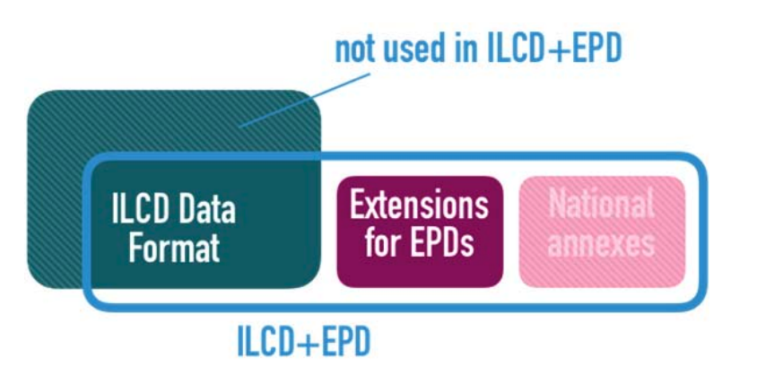

Hvor finder man digitale miljøvaredata?
Hvor finder man digitale miljøvaredata?
I DENNE VIDEO...
➡ Gennemgang af udvalgte EPD-udbydere
➡ Kort om EPD'er på digital format
➡ Søgning på ECO Portal
Forskellige EPD-aktører


Forskellige EPD-aktører
| Nationale udbydere | Søgeplatforme | Udbydere af
original
generisk data |
Integrerede værktøjer |
|---|---|---|---|
|
|
|
|
|
Eksempel-EPD i HTML-formatet
Navn: "ABT Skanska Grön AsfaltBio Zero"
Udbyder: EPD-Norge
Digitale EPD-formater
ILCD og ILCD+EPD
ILCD og ILCD+EPD


Andre EPD-formater:
HTML
XML
CSV
JSON
Oversigt over udvalgte EPD-udbydere
Klik på en række for at se flere detaljer
Søgning på ECO Portal
Opsummering
Gennemgang af udvalgte EPD-udbydere
Kort om EPD'er på digital format
Søgning på ECO Portal
Opsummering
Gennemgang af udvalgte EPD-udbydere
Kort om EPD'er på digital format
Søgning på ECO Portal
Opsummering
Gennemgang af udvalgte EPD-udbydere
Kort om EPD'er på digital format
Søgning på ECO Portal
Opsummering
Gennemgang af udvalgte EPD-udbydere
Kort om EPD'er på digital format
Søgning på ECO Portal